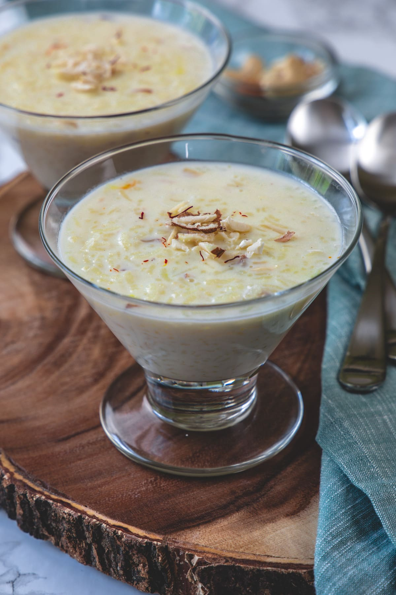

Kheer

Description:
A creamy and comforting Pakistani rice pudding,
kheer is prepared with rice simmered in milk,
sweetened with sugar, and flavored with cardamom and saffron,
making it a delightful dessert loved across the subcontinent.
Ingredients:
- Rice - 1/2 cup
- Milk - 4 cups
- Sugar - 1/2 cup (adjust to taste)
- Cardamom pods - 4-5, lightly crushed
- Saffron strands - a pinch (soaked in warm milk)
- Almonds - 10-12, sliced or slivered
- Pistachios - 10-12, sliced or slivered
- Raisins - 2 tablespoons
- Ghee (clarified butter) - 1 tablespoon
- Optional garnishes: Chopped nuts like almonds or pistachios
Steps:
- Wash and rinse 1/2 cup of rice.
- In a large pot, combine the rice and 4 cups of milk, and bring to a boil.
- Reduce the heat to low and simmer, stirring occasionally,
until the rice is cooked and the kheer thickens (about 30-40 minutes).
- Add 1/2 cup of sugar (adjust to taste), crushed cardamom pods,
and a pinch of saffron soaked in warm milk. Stir well.
- In a separate pan, heat 1 tablespoon of ghee and lightly fry
the almonds, pistachios, and raisins. Add them to the kheer.
- Simmer for a few more minutes, allowing the flavors to meld.
- Remove from heat, and once it cools, optionally garnish with
chopped nuts such as almonds or pistachios
- Chill and serve the kheer cold. Enjoy!